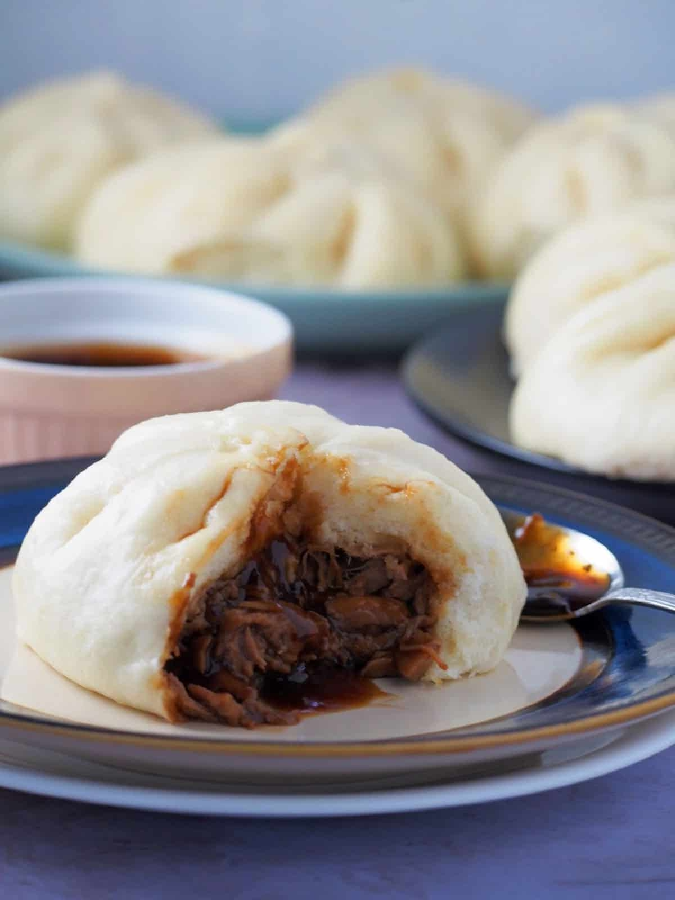
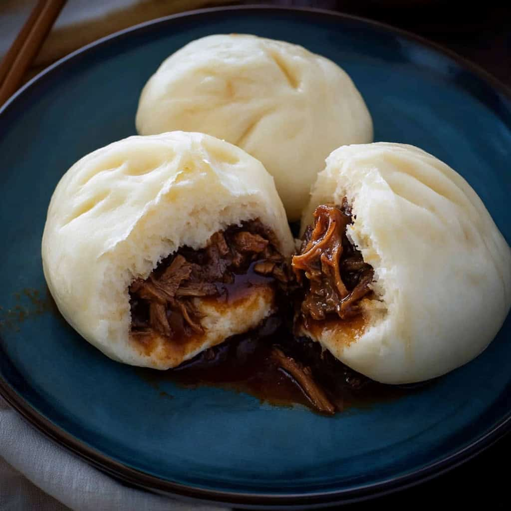
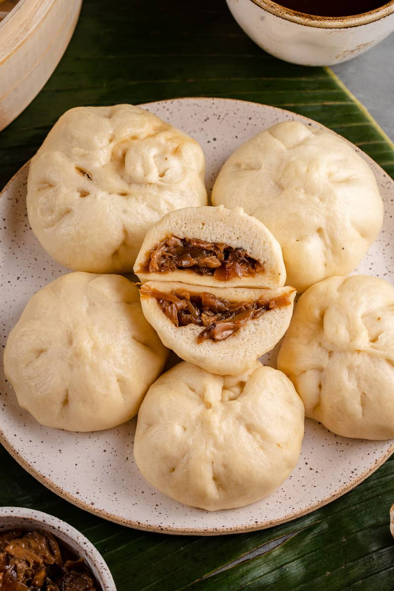
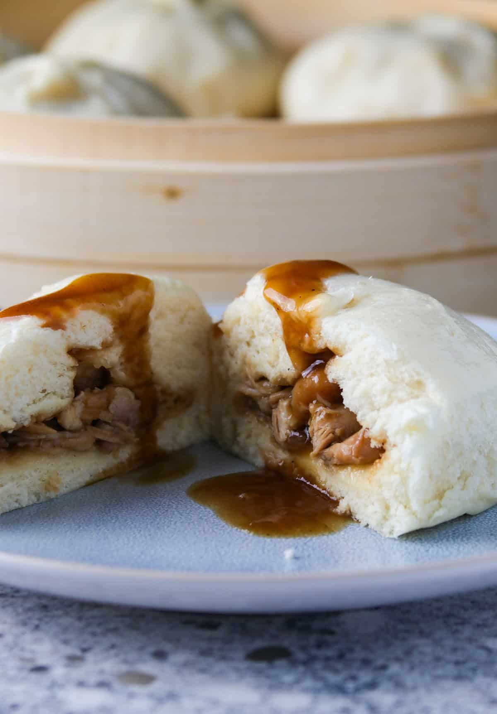

Siopao





History
Ang Siopao ay isang Filipino adaptation ng Chinese bao buns, na dinala sa bansa ng Chinese immigrants bago pa ang panahon ng Kastila. Sa Pilipinas, naging parte ito ng merienda culture at street food, kadalasang may meat filling tulad ng pork asado o bola-bola, at soft, fluffy bun. Sa paglipas ng panahon, ang Siopao ay naging staple sa panaderya at fast-food chains, at simbolo ng fusion ng Chinese technique at Filipino taste.
Ingredients & Notes
All-purpose flour
Yeast
Sugar
Milk or water
Salt
Egg
Filling: pork, chicken, or beef with soy sauce, oyster sauce, and seasonings
Price
₱40